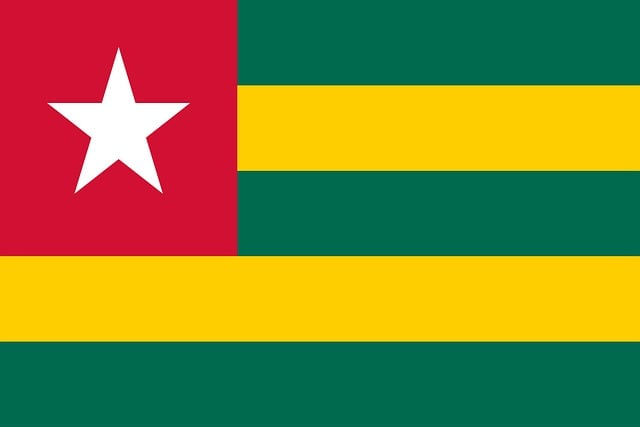

Jeshurun Salami
About Me
Hello! My name is Jeshurun Salami. I am from Lomé, Togo. I am an electrical technician in building electrical systems and solar energy. I am particularly interested in new technologies, innovation, and creating technical solutions that can improve everyday life. I enjoy learning, developing new skills, and exploring fields related to advanced technology. My goal is to continue growing in sectors that combine innovation, creativity, and meaningful impact. My favorite sport is soccer, and in my free time, I enjoy playing video games.
Togo

Togo is a country in West Africa located on the Gulf of Guinea. It is bordered by Ghana to the west, Benin to the east, and Burkina Faso to the north. Its capital city is Lomé, a vibrant city known for its large market, seaport, and beaches. Togo is recognized for its cultural diversity, with more than forty ethnic groups living together in harmony. Its economy is based mainly on agriculture, trade, and phosphate mining. The country also has beautiful landscapes, ranging from the southern beaches to the mountains and forests in the central and northern regions, making it a destination rich in natural beauty and discovery.